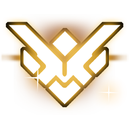
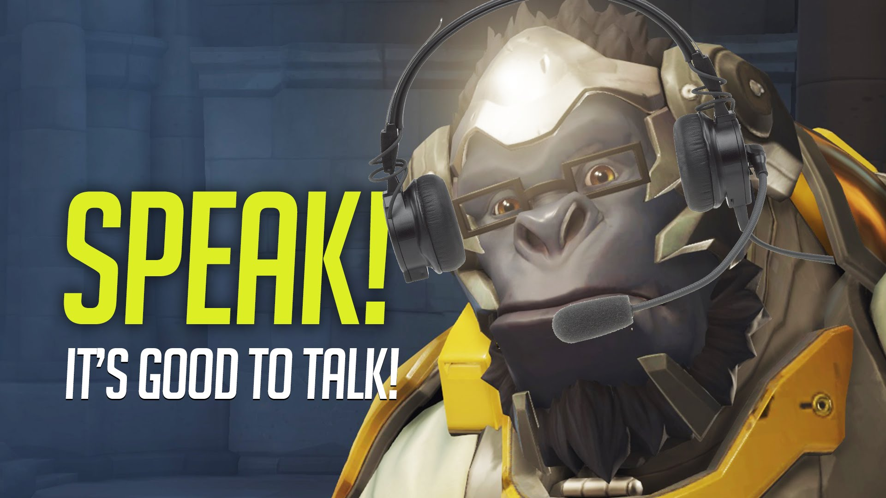
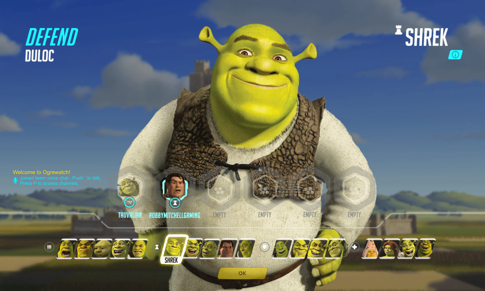
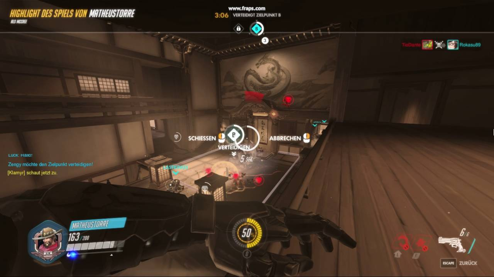
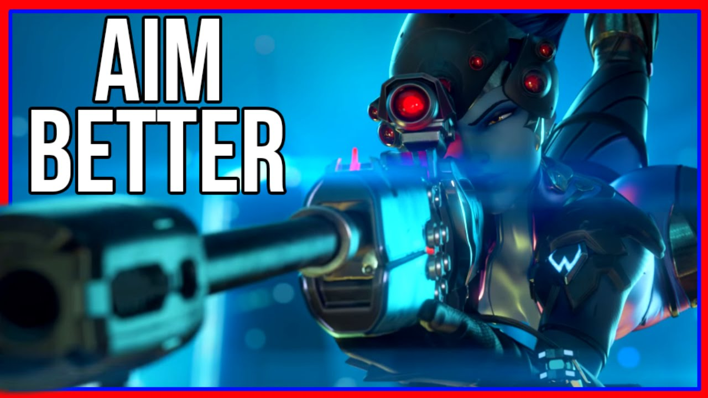
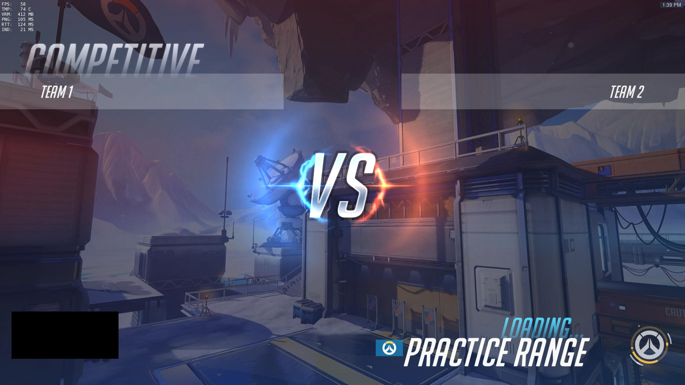

How to get Grandmaster In Overwatch
Attitude
 Thumbnail from: A_Seagull
Thumbnail from: A_Seagull
- Always have a postiive environment it never a good idea to play while angry and tilted youll only get worse
- Respect everyone you play with and against because youll never know who will end up on your team next match
- Encourge your teammates to do better no one like a a debby downer that just insults the whole team
Communication

Thumbnail from: Unit Lost - Great British Gaming
- Make sure to know call outs, tell your teammate there is a flanker, when you need help, where the enemy team is at etc..
- Compliment your teammates when they do somehting good trust me everyone plays better when they feel good
- Know when your in the wrong apologize to your team when you are up to far or when have a NA ult
Hero Selection

Reddit user: Tauvalian
- Never be a one trick pony make sure you have a decent hero pool so you have options throughout the game
- If needed be able to have the balls to switch roles with a fellow teammate dont try to be the dps hero when you usually only play support
- Know when to switch off a certain hero dont be the widow that get a elimination every 2 minutes and dosent want to switch off
Game Sense

Thumbnail from: Wayne Yang
- Try to get familiar with actions that may indicate they have their ultimates
- Get familiar with every map it's good to know escape routes or where the closest health pack is located in time of emergency
- Know your own cooldowns some heros are really dependent on their second abilities
Aim

Thumbnail from: WTBGold
- Two types of aiming first one is tracking pretty self explanitory try to use heros like tracer, soldier, mei etc...
- Then their is flicking the harder opf the two but very rewarding heros include mccree, hanzo, widow etc...
- All thats left are the heroes that require no aiming whats so ever.Thats the likes of winston, symmetra, moria and others
Practice

Image from Reddit user: qqlolvash
- Practice makes perfect one does not get good with just playing the game an hour per day
- Make customize games to improve a specific aiming, movement and specific heros and get fimiliar with maps
- Play different game modes to get good at specific situation you mioght find yourself in an actual game
- Watch professionals players streams mroe than likley they will try and educate on mistakes that they nmake and what should have been done instead